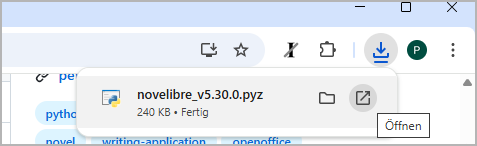

Installation under Windows
Important
You receive novelibre as source code in the Python programming language. In order to execute the program, Python must be installed on your PC. There are several ways to obtain Python for free. In any case, I recommend the developers’ website:
Python is being continuously developed and improved. However, you don’t need to update your Python installation as long as novelibre works with it.
The actual installation of novelibre is simple and straightforward. The installation program automatically creates an installation directory, copies everything necessary into it, and generates a start file named run.pyw adapted for the respective computer, which must be called in order to execute novelibre.
The necessary manual work consists of linking this start file to the desktop and, if desired, assigning a program icon to the link. I will also show you how to set it up under Windows so that the novelibre project files have their own program icon and that the program application is started when you double-click on them.
Unfortunately, I cannot automate this with my simple means without causing problems with the security mechanisms of the operating system.
Installing the application
- Step 1
Either launch the downloaded novelibre_vx.x.x.pyz file by double-clicking,

or execute
python novelibre_vx.x.x.pyzon the command line.
“x.x.x” means the version number.
In both cases, a success message should appear.

Important
Many web browsers recognize the download as an executable file and offer to open it immedately. This allows you to start the installation conveniently.
However, depending on your security settings, your browser may initially refuse to download the executable file. In this case, your confirmation or an additional action is required.
If this is not possible, you have the option of downloading the zip file. Then unpack it and execute
setup.pyby double-click.
Making novelibre accessible on the Desktop
- Step 2
Open the installation folder.
- Step 3
Drag and drop run.pyw to the desktop while holding down the
Altkey. This creates a shortcut to launch novelibre from the Windows desktop. Now you can also drag and drop .novx project files to this shortcut.
- Step 4
Optionally, you can replace the “Python” icon with the novelibre logo you may find in the installation’s icons subdirectory.
To do this, right-click on the desktop shortcut and open the Properties dialog. Select the Shortcut Tab and click on the Change icon button (1). In the icon selection dialog, click on the Browse… button (2). This opens a file selection dialog. Move to
<home>\.novx\iconsand double-click on the “N” logo (3).
- Step 5
To rename the shortcut to novelibre, right-click on the desktop shortcut and open the Properties dialog. In the first tab, replace “Shortcut to run.pyw” with “novelibre”.

Associating .novx files with novelibre
- Step 6
Optionally, you can associate the .novx file extension with the novelibre application. Then the project files are displayed with the novelibre icon in the Explorer, and you can open them with novelibre by double-click. Further, you can display .novx files with a web browser, using the novx.css style sheet.
Double-click on the add_novelibre.reg script. Windows will display a warning and ask you for confirmation. If in doubt, you can inspect the add_novelibre.reg file with a text editor or ask an expert you trust.

Hint
You can undo this by executing the remove_novelibre.reg script. This removes all the novelibre-specific entries from the Windows registry while keeping the application.
To uninstall the application and all its tools, plugins, and configuration data, just delete the
<home>\.novxfolder after executing the remove_novelibre.reg script.
Important
Executing the program under Windows by double-clicking on the .novx file works under the hood by calling the currently installed version of the Python interpreter.
If you update Python at a later date, you must then re-install novelibre afterwards, and execute add_novelibre.reg again. Otherwise, Windows will not be able to find the new Python version and will fail when trying to open .novx files on double-clicking.
Please keep that in mind, even if it’s pretty unlikely that novelibre will need a Python update in the near future.
Updating the application or a plugin
Just execute the first step as described above. If there is any further action required, the setup script will give you a message.